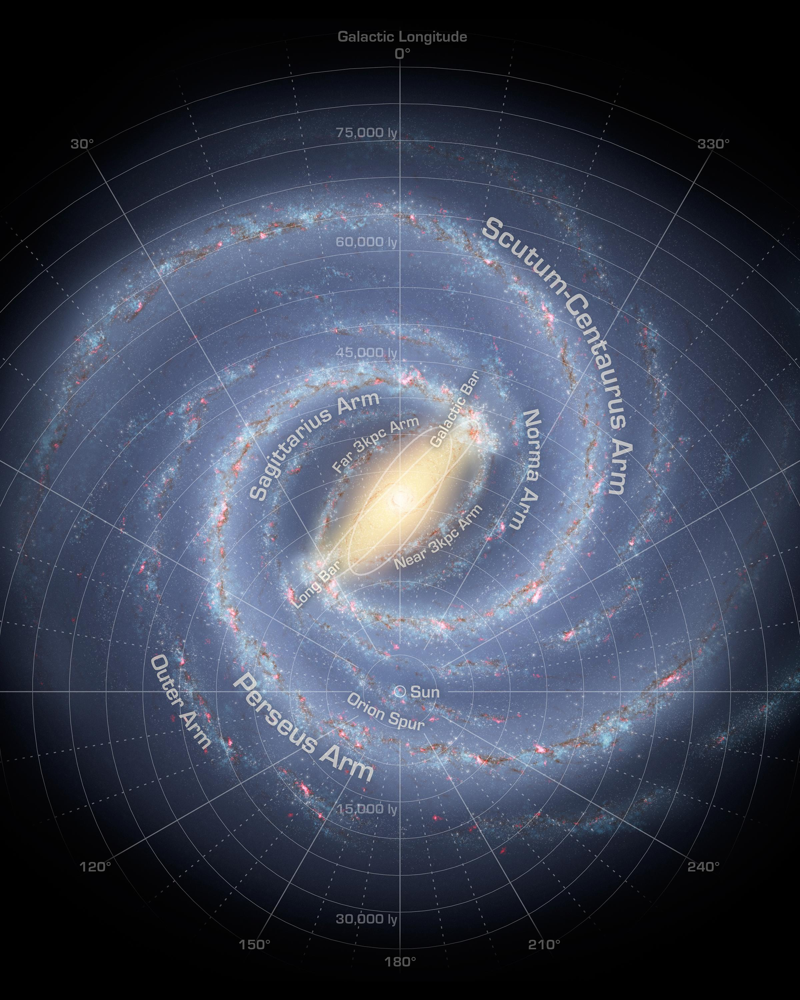
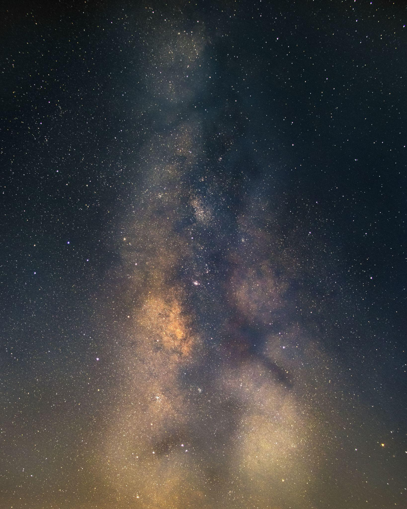
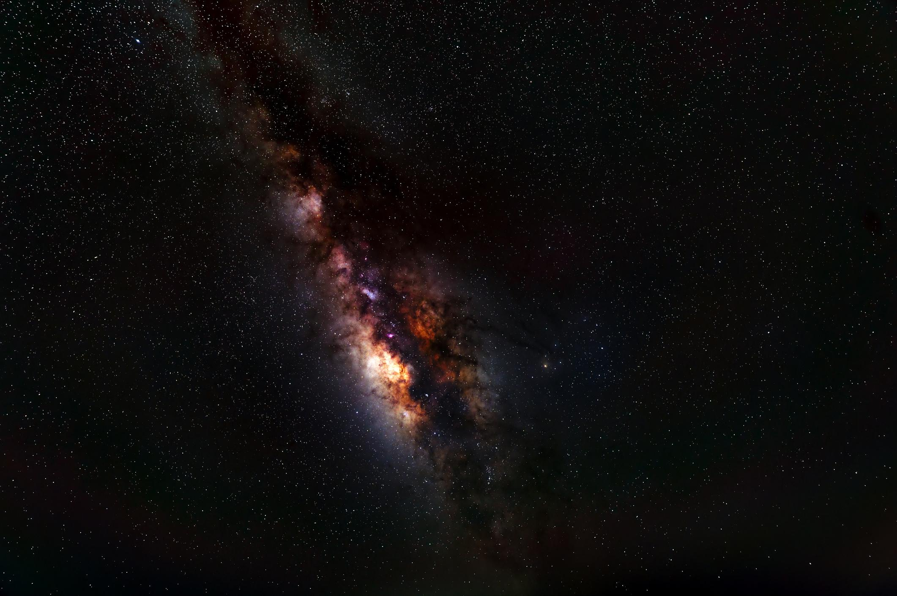
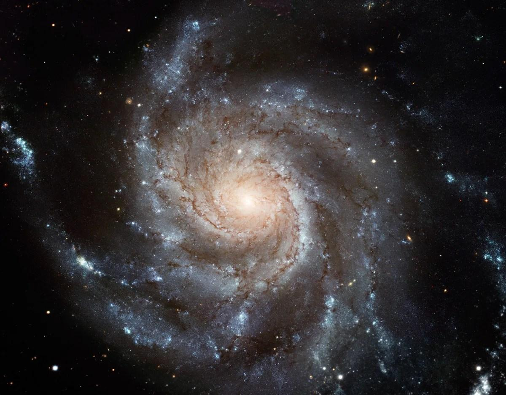

Age and Formation
The Milky Way is about 13.6 billion years old and formed soon after the Big Bang, which happened around 13.8 billion years ago. It formed from smaller clouds of hydrogen and helium gas that slowly came together through gravity.
Our Home Galaxy
“It is just one of billions of galaxies, but the Milky Way is our galaxy, our home in the universe.”
The Milky Way is the home galaxy of the Solar System. It is one of an estimated two trillion galaxies in the observable universe and is part of the Local Group, a small gravitationally bound group of galaxies that also includes the Andromeda Galaxy and the Triangulum Galaxy.
Explore Full StoryThe Milky Way is a barred spiral galaxy and one of the brightest and largest galaxies in its collection. It has played an important role in modern astronomy because scientists study it to understand how galaxies, stars, and the wider universe formed and changed over time. From Earth, the Milky Way appears as a faint glowing band in the sky because we are looking through the galaxy’s disk from inside it.
The Milky Way is about 13.6 billion years old and formed soon after the Big Bang, which happened around 13.8 billion years ago. It formed from smaller clouds of hydrogen and helium gas that slowly came together through gravity.
The Milky Way is believed to be around 100,000 light-years across. Its thin stellar disk is about 1,000 light-years thick, while the central bulge is much thicker.
The Milky Way has several main parts: the central bulge, the bar, the spiral arms, the disk, and the halo. These parts work together to create its spiral galaxy shape.
At the centre of the Milky Way is Sagittarius A*, a supermassive black hole with a mass of about four million Suns.
The spiral arms are some of the most visible parts of the Milky Way. They are dense regions of stars, gas, and dust where new stars are often formed. The Solar System is located in the Orion Spur, a smaller region between the Sagittarius and Perseus arms.


Dark matter is one of the most mysterious parts of the Milky Way. Stars and gas in the outer galaxy move faster than expected, which suggests that invisible matter surrounds the galaxy.
The Milky Way is still forming stars today. Stars mainly form inside giant molecular clouds, especially in the spiral arms.
The Sun and planets are located in the Orion Spur, around 26,000 light-years from the galactic centre.
The Solar System takes about 225 to 250 million years to complete one orbit around the Milky Way.
The Milky Way is part of the Local Group, which includes the Andromeda Galaxy, the Triangulum Galaxy, and many smaller galaxies.
The most visible satellite galaxies of the Milky Way are the Large Magellanic Cloud and the Small Magellanic Cloud. These can be seen from the Southern Hemisphere.


In about 4.5 billion years, the Milky Way and the Andromeda Galaxy are expected to collide and merge. This future galaxy is sometimes called Milkomeda or Milkdromeda.
The Milky Way has been observed and studied for thousands of years. Many cultures have connected it with myths, stories, navigation, and philosophy. Today, light pollution makes it harder for many people to see it.
The Milky Way is more than just the galaxy that contains our Solar System. It is a vast, ancient, and dynamic system that helps scientists understand stars, galaxies, dark matter, and the future of the universe.